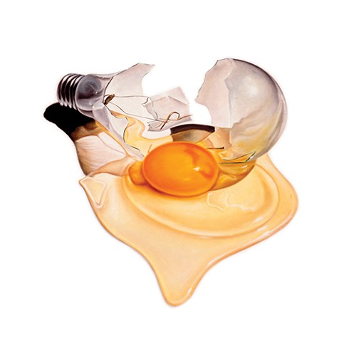

Literature
Ron English, Popaganda: The Art & Subversion of Ron English (San Francisco: Last Gasp, 2001), p. 80. ISBN 1-887128-60-3.
Ancillary Documentation

Used in Big Top Popaganda — Page 18.


Ron English, Popaganda: The Art & Subversion of Ron English (San Francisco: Last Gasp, 2001), p. 80. ISBN 1-887128-60-3.
Used in Big Top Popaganda — Page 18.